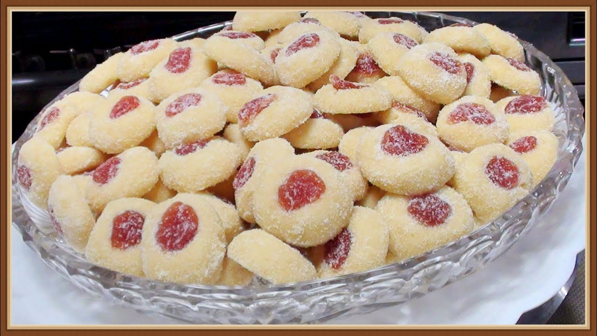

Sequilhos Recipe

Sequilhos is a simple, delicious biscuit mostly found in northeast Brasil-sil-sil-sil
usually made from corn starch and water, Guava paste can also be added as a topping
Recipe made with love by Jamilly
Ingredients
- 3 teacups of corn starch
- 1 teacup of flour
- 3 spoons of butter
- 1 teacup of sugar
- 1 egg
- 300g of Guava paste
Instructions
- Mix corn starch,flour, butter, sugar, and egg and leave it to rest for 5 minutes
- On a baking tray with waxpaper, make tiny balls with the mix and leave space between them
- With your little finger, poke a hole in the center of the balls and put a dot of guava paste inside the hole
- Bring it to the oven at 180c (360 in freedom units) for about 15 mins or until golden